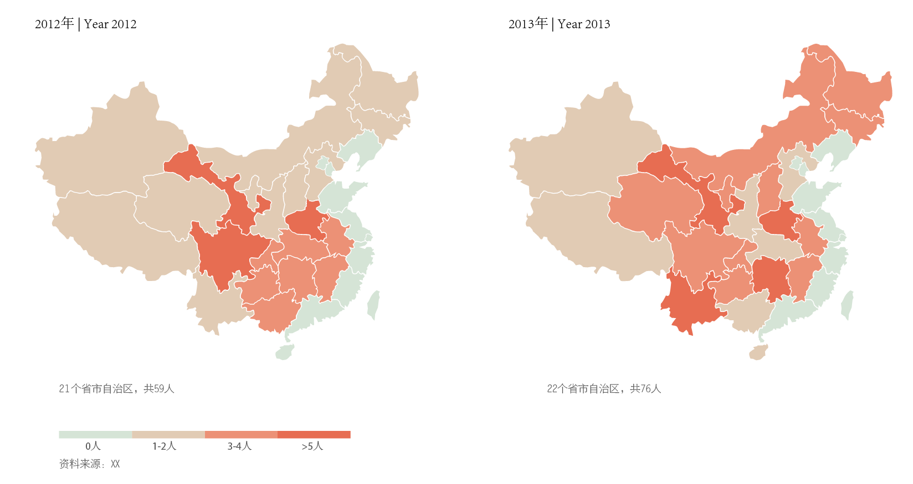
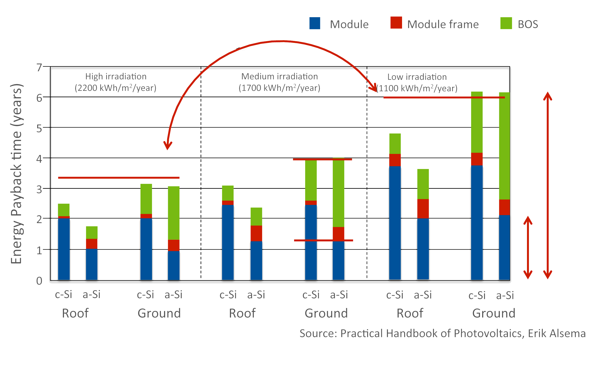

这次还是关于地图信息可视化。让我们试试中国的数据，操作步骤很简单。
基础资料：0)数据，这个因人而异；1）矢量中国地图（搜索引擎很容易找到）；2）配色方案，可参考一个不错的网站ColorBrewer；3）软件工具：AI（illustrator）
另外，强烈推荐经常看一下经济学人杂志的图表，我认为是所有出版物中做的比较好的。（比如这个关于中国省市经济情况）
基础数据、地图、工具准备好后，就可以方便做出一个比较简单的可视化效果：

具体的制作过程只用到了AI的最基本操作，上图制作不会超过半个小时。
当然，我们还可以为其添加交互功能，比如鼠标放上去显示具体信息等等。关于交互的制作，我也在慢慢学习和总结。
数据信息比较多时，我们可能需要用脚本语言来进行分析与处理，具体可见数据可视化笔记（2）中的第三张图的制作过程。
另外再奉送一张柱状图的可视化，关于光伏能源回收周期。里面涉及：1）不同类型的光伏（c-Si, a-Si）2）三个部分（组件、Module Frame,其他部分）3）在三种辐射地区（高、中、低）4）不同安装位置（屋顶、地面）近十个变量。

Credit: TU DelftX (Solar Energy)